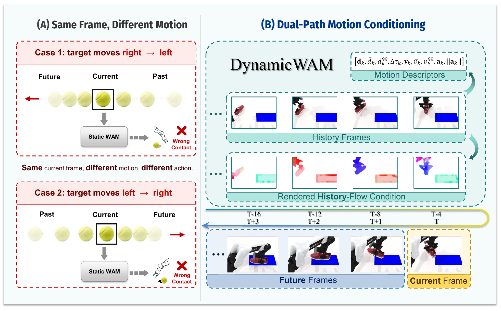
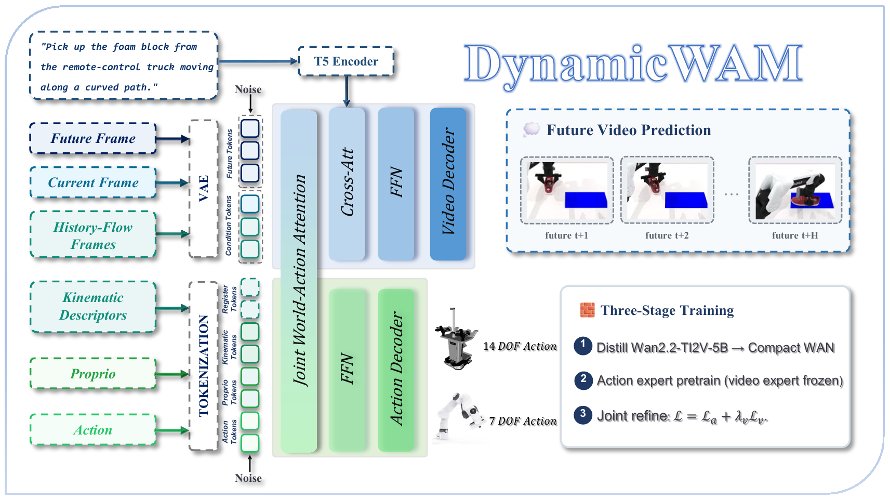
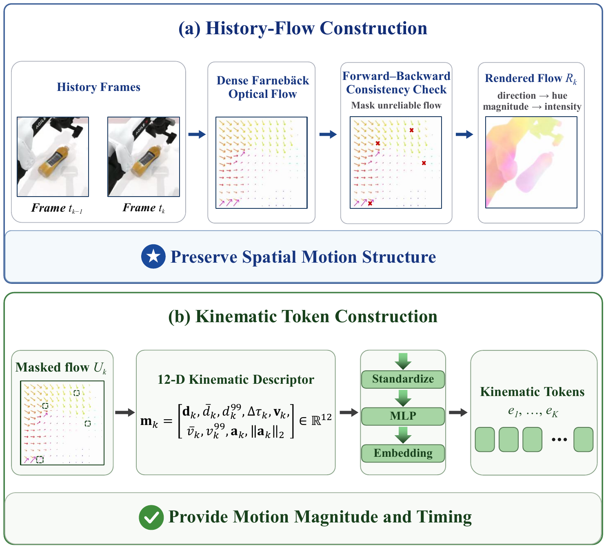
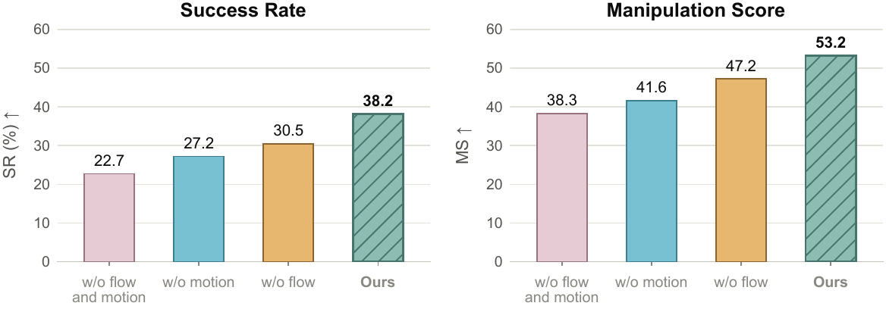
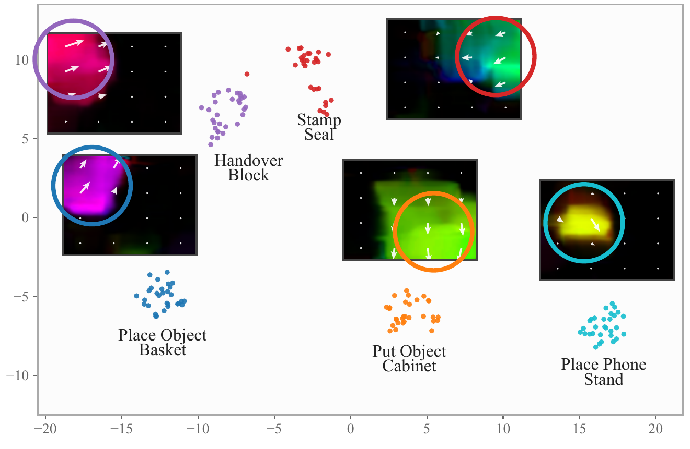
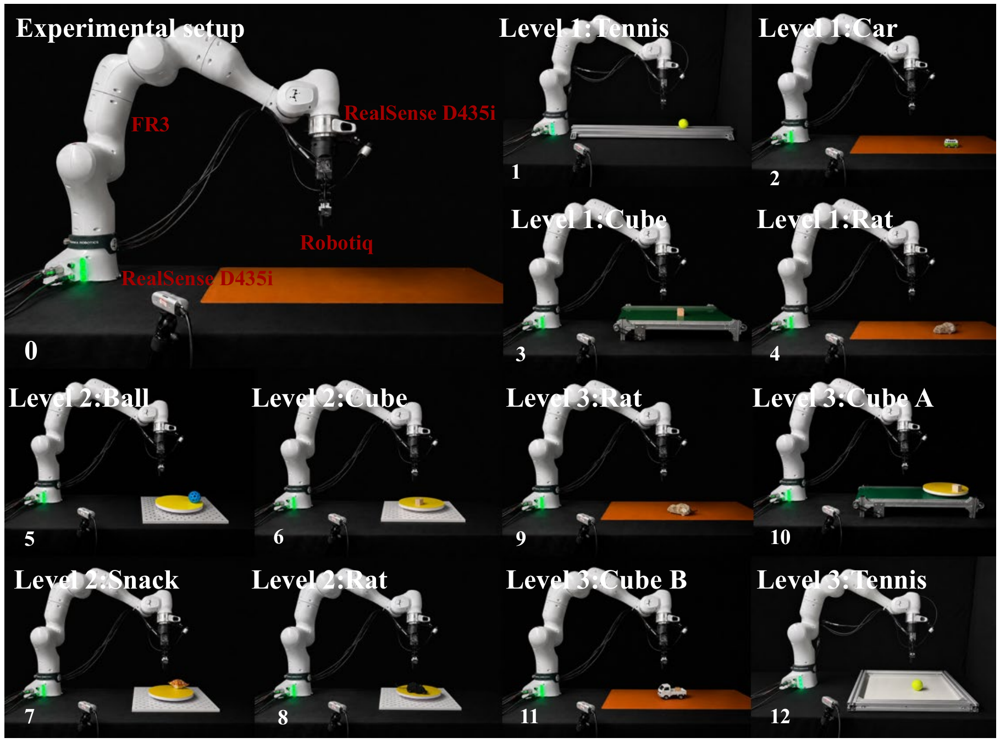
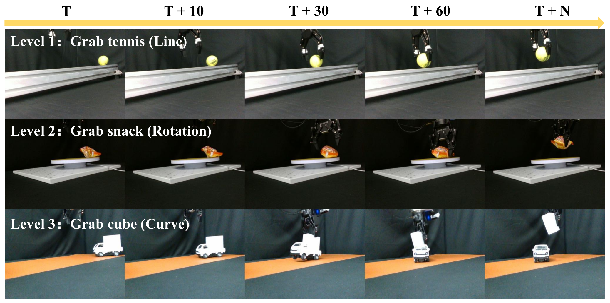

Dynamic manipulation requires robots to infer target motion and respond promptly, yet existing
World–Action Models (WAMs) typically condition only on the current frame and execute large
backbones synchronously, limiting motion awareness and responsive control in dynamic scenes.
We propose DynamicWAM, a compact WAM for dynamic object manipulation with dual-path
motion conditioning. DynamicWAM introduces history-flow conditioning, encoding temporally
aligned optical-flow frames alongside the current observation through a frozen pretrained
video VAE to preserve spatial motion structure, while injecting kinematic descriptors of
displacement, duration, velocity, and acceleration into the action expert to provide motion
magnitude and timing.
The two complementary paths are fused through joint world–action attention. A distilled
compact backbone and real-time chunking (RTC)-based asynchronous execution further enable
responsive control. On DOMINO, DynamicWAM achieves a 38.2% success rate and a
53.2 manipulation score, outperforming all evaluated baselines. Across 12 real-world
tasks spanning linear, circular, and compound target motion, it achieves a 46.7% average
success rate, exceeding the strongest baseline by 22.9 percentage points.

Motivation. Similar current frames can correspond to opposite target motions, while
dual-path motion conditioning resolves this ambiguity using complementary history-flow and
kinematic cues.
Method
DynamicWAM extends a standard World–Action Model with dual-path motion conditioning.
Temporally aligned history-flow frames are encoded together with the current multi-view
observation through a frozen pretrained video VAE, preserving where motion happens and how it
is organized in image space. In parallel, kinematic descriptors of displacement, interval
duration, velocity, and acceleration are projected into kinematic tokens and injected into the
action expert, restoring the motion magnitude and timing that per-frame flow rendering
discards. A compact video expert distilled from Wan2.2-TI2V-5B and the action expert interact
through joint world–action attention, coupling future-video prediction with action generation.

Overview of the architecture. History-flow frames are encoded with the current
observation through a frozen pretrained video VAE to provide spatial motion cues, while
kinematic descriptors are injected into the action expert to provide metric scale and
timing. The video and action experts interact through joint world–action attention. Training
proceeds through video-expert distillation, action-expert pretraining, and joint refinement.
The observation history is split into K = 4 intervals whose endpoints are
Δ = 4 policy steps apart. For each interval, dense Farnebäck optical flow from the
fixed head camera passes a forward–backward consistency check; the masked flow field is
rendered with direction as hue and magnitude normalized by the frame's own 99th percentile.
Statistics of the same flow field, together with the exact interval duration, form a 12-D
kinematic descriptor that is standardized with dataset-level statistics and projected into a
kinematic token. Intervals missing at episode start are marked invalid and receive learned
validity embeddings.

Dual-path motion conditioning. (a) For each history interval, dense optical flow is
filtered by forward–backward consistency and rendered as an RGB image for the history-flow
path. (b) Statistics of the masked flow field and the interval duration form a 12-D
kinematic descriptor, standardized and projected into a kinematic token for the action
expert.
For real-robot deployment, DynamicWAM adopts Real-Time Chunking: the next action chunk is
predicted while the current one is being executed, hiding inference latency through
execution–inference overlap. DOMINO evaluation keeps the benchmark's native synchronous
protocol, so the simulated comparison isolates motion conditioning itself.
Simulation Results
On all 35 tasks of DOMINO Level 1 in the clean dynamic setting — 100 accepted episodes
per task, unseen instructions, native synchronous protocol — DynamicWAM reaches
38.2% success and a 53.2 manipulation score, outperforming all eleven evaluated
baselines on both metrics: +8.9 SR and +10.7 MS over the strongest baseline, InternVLA-A1.5,
and +21.0 SR over PUMA. At 173.7 ms per policy query, it is also about 3.2× faster than
InternVLA-A1.5, giving a favorable trade-off between inference efficiency and
dynamic-manipulation performance.

Ablation of dual-path motion conditioning. History flow and kinematic tokens provide
complementary gains in both SR and MS.
The two paths contribute separately and compound. History-flow conditioning lifts the static
WAM from 22.7% to 27.2% SR; kinematic tokens alone reach 30.5% SR and 47.2 MS; combining both
yields 38.2% SR and 53.2 MS — 7.7 SR points above the stronger single path. The largest gains
appear on tasks that require accurately timed contact: on move_pillbottle_pad success
rises from 42% to 55% to 91% (static → + flow → full), and on beat_block_hammer from
36% to 49% to 84%. Kinematic tokens matter most on place_phone_stand, where history
flow alone achieves 32% against 80% for the full model.

Motion structure in flow latents. t-SNE of history-flow latents from five
representative tasks: samples form locally coherent motion structures in the frozen
video-VAE latent space.
Real-World Experiments
We build a 12-task real-robot suite in three motion regimes, four tasks each:
linear motion from a remote-controlled vehicle, an inclined rail, a conveyor belt, or a
self-propelled toy; uniform circular motion on a rotating turntable; and
compound motion including random bouncing, simultaneous translation and rotation, and
curved trajectories. All policies run on Franka Research 3 arms with CTAG2F90 or Robotiq
2F-140 parallel-jaw grippers, are fine-tuned on the same 1,200 demonstrations, and are
evaluated for 20 trials per task.

Real-world evaluation setup. Twelve tasks span three levels of target-motion
complexity and two Franka Research 3 gripper configurations.
DynamicWAM achieves the highest success rate at every motion level — 70.00% linear,
51.25% circular, 18.75% compound — averaging 46.67%, 22.92 points above
the strongest external baseline, π0.5; on compound motion, no external baseline
records a single successful trial. The variants keep their simulation ordering: history flow
and kinematic tokens independently lift the static WAM from 25.00% to 36.25% and 40.00%, and
combining both paths reaches 46.67%.

Representative real-world tasks. From top to bottom, the targets undergo linear,
circular, and compound motion (Levels 1–3). Columns show execution from the initial
observation at T to the completed grasp at T+N.
Asynchronous execution adds a complementary gain on top of motion conditioning: RTC improves
the average success rate from 42.08% to 46.67%, and the synchronous variant already
outperforms every external baseline. Under background, lighting, and object-color shifts on
the Level-1 tasks, DynamicWAM achieves the highest success rate under every shift, improving
out-of-distribution success to 36.3% versus 17.5% for π0.5.
BibTeX
@article{dynamicwam2026,
title = {DynamicWAM: Dual-Path Motion Conditioning
for Dynamic Manipulation},
author = {Anonymous},
journal = {Under review},
year = {2026}
}